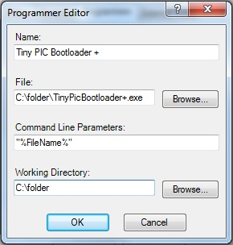
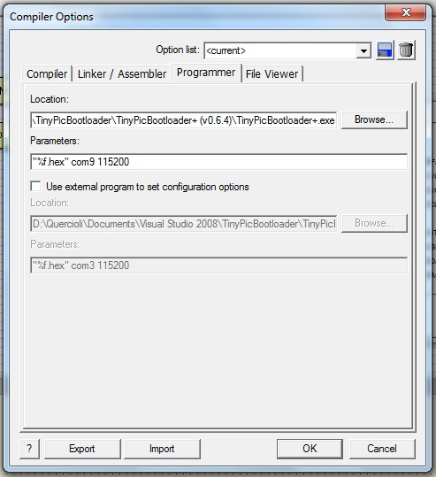

Tiny AVVR/PIC Bootloader+Using PC software:Linux specifics:This software works perfectly on Linux but you need to:
mono TinyPicBootloader+.exe Software User's manual:Main tab### todoConfiguration tab### todoDebug tab### todoUse TinyPicBootloader+ with command lineSyntax is:tinypicbootloader+.exe "c:\folder 1\folder etc\file name.hex" [COMx [BaudRate]|auto] [exit]If 'auto' is used, then autodetect the right COM port and baud rate (only if automatic Reset on RTS serial pin is enabled and correctly connected to PIC device). If 'COMx' or 'BaudRate' aren't passed in arguments, the previuos option used in the GUI (stored in the it's depending "config.ini" file) will be used. Examples: tinypicbootloader+.exe "c:\test file.hex" COM8 9600 exit tinypicbootloader+.exe "c:\test file.hex" com8 tinypicbootloader+.exe "c:\test file.hex" tinypicbootloader+.exe "c:\test file.hex" EXIT tinypicbootloader+.exe "c:\test file.hex" auto Configure "Great Cow Graphical BASIC"- go to "Edit -> Preferences..." menu- in "Programmers" tab, click on [Add...] - fill as follow: 
Configure "Flowcode V5"- go to "Build -> Compiler options..." menu- in "Programmer" tab, fill as follow (com9 and 115200 are just an example, change with your own configuration or live it blank): 
|